R4D / ART-01
Викторианская оранжерея
01-T — прямой текст. 01-D — тот же замысел с отдельно описанными композицией, светом и материалами.
G1. Какую из двух композиций взять дальше и какие признаки сосуда сохранить?
Нажмите на изображение, чтобы открыть полный файл.
Четыре исходных кадра
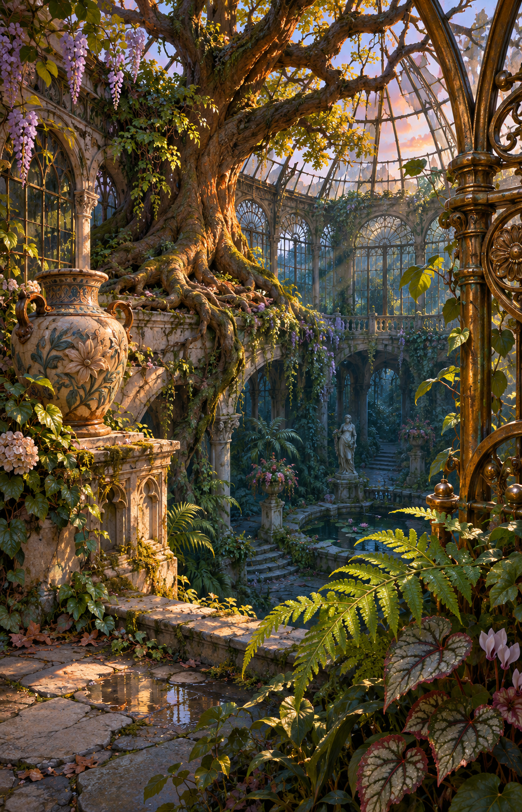
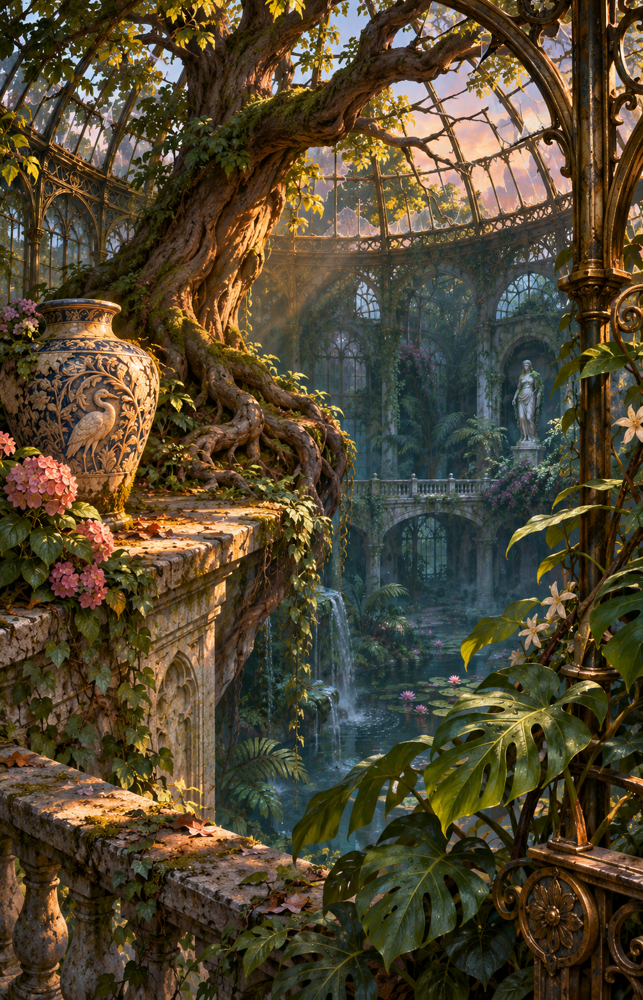
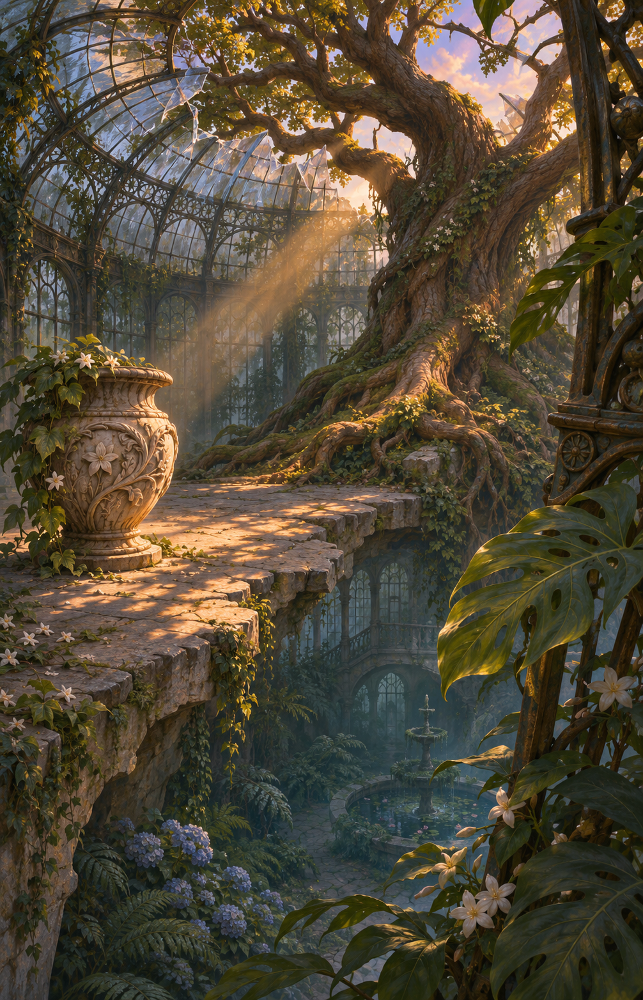
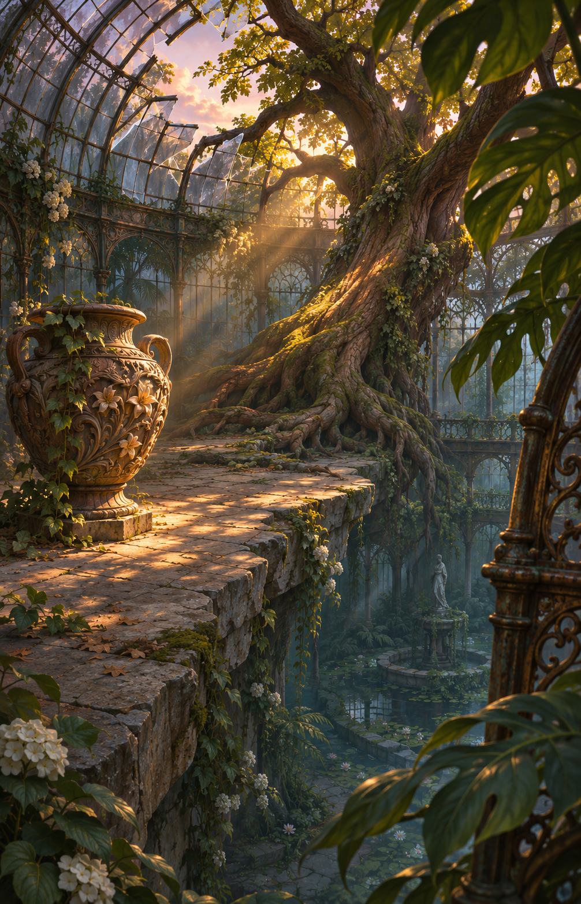
Мастера и уточнённые правки
01-T · Прямой текст
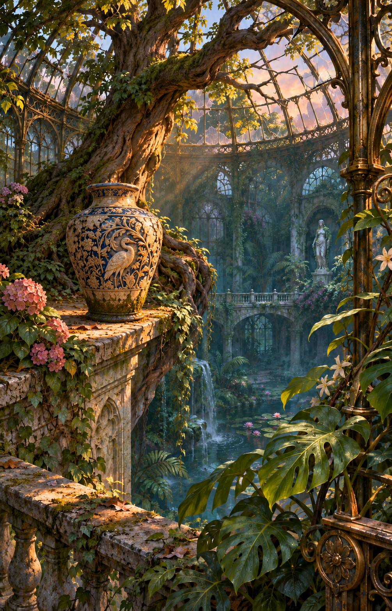
01-D · Художественная постановка
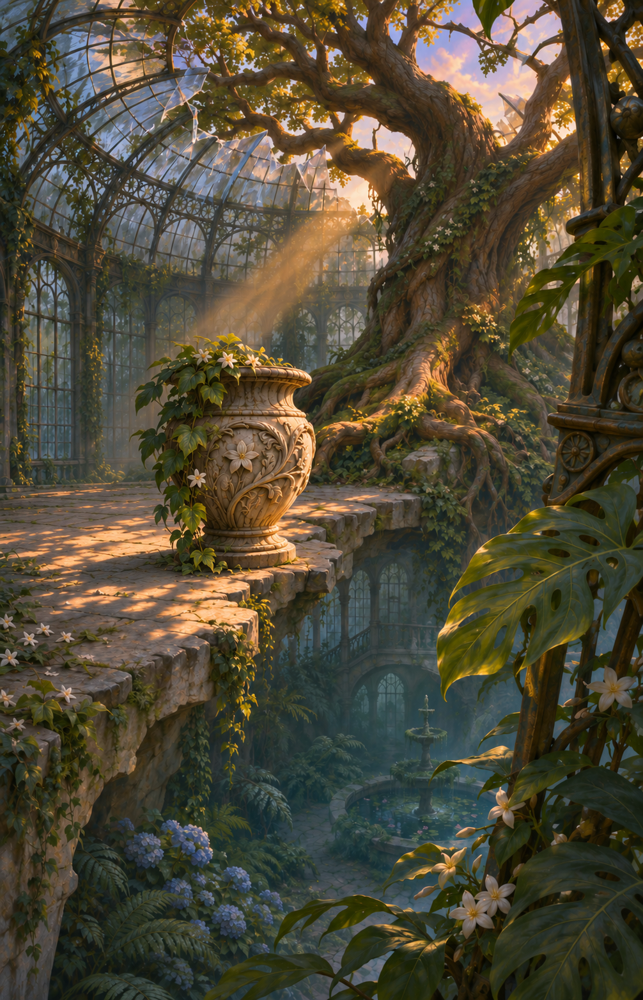
Первый общий проход
В обеих версиях сосуд сместился дальше намеченного.
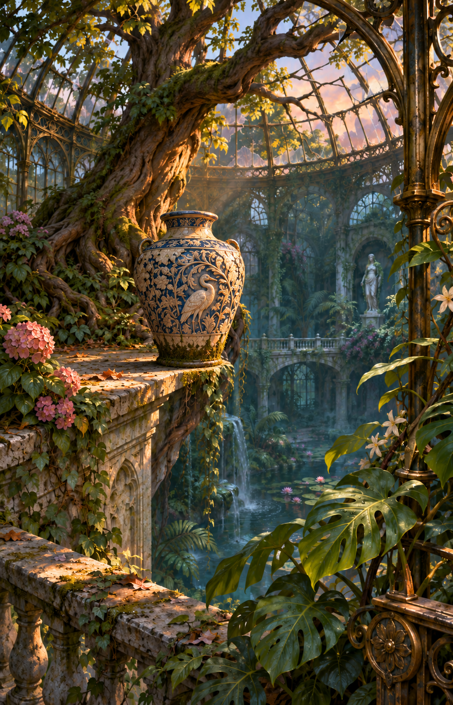
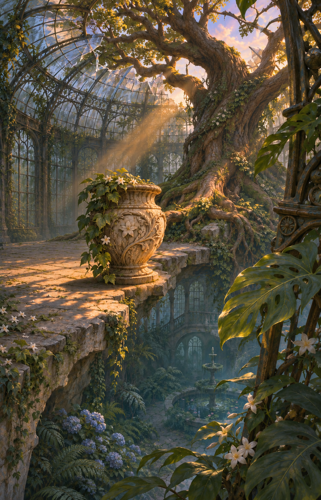
Сравнительные листы
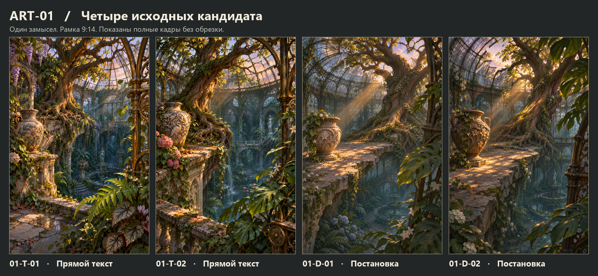
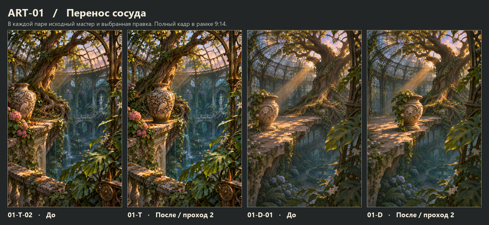
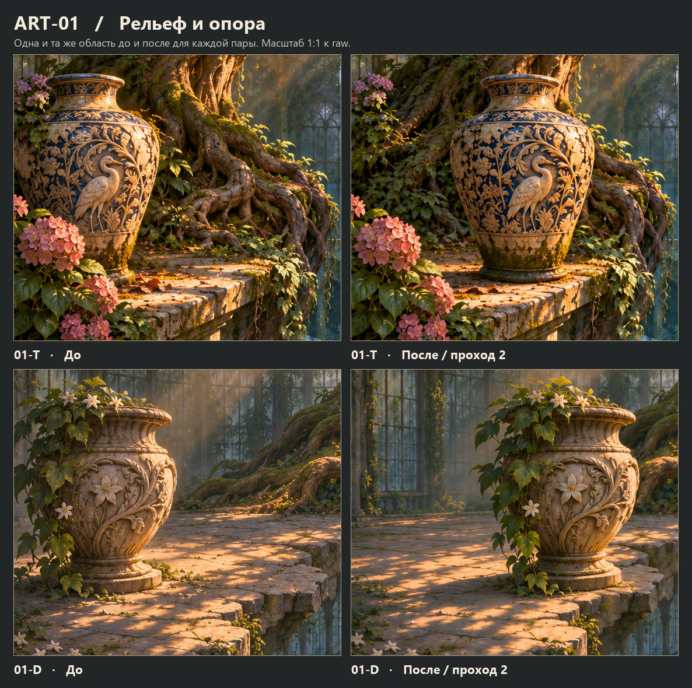